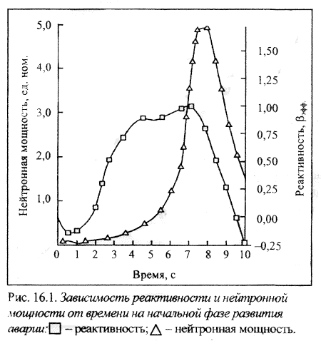
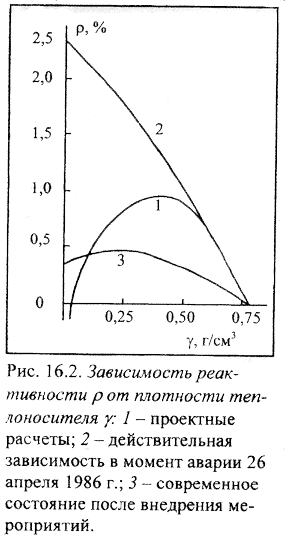
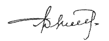

Глава 16. ЕЩЕ О ЧЕРНОБЫЛЕ
(неопубликованная на русском языке статья)
Группа экспертов МАГАТЭ в 1986г. выпустила доклад ИНСАГ-1 о причинах катастрофы на ЧАЭС, и через семь лет вышел их откорректированный доклад ИНСАГ-7. Семь лет - срок достаточный для изучения многих исследований и составления собственного мнения. По выходу ИНСАГ-7 в журнале «Nuclear Engineering» напечатана статья господина Д. Вэлли «Кто виноват в Чернобыльской аварии - зрелые размышления Международной Консультативной Группы по ядерной безопасности». Попробуем оценить зрелость размышления экспертов.
1. О недогреве теплоносителя
Уже восемь лет бытует ошибочное утверждение, что в связи с большим расходом теплоносителя недогрев его на входе в активную зону уменьшился, кипение началось в самом низу акгивной зоны и, как следствие, возникла теплогидравлическая неустойчивость. На ошибочность этого автор статьи указывал еще в 1986 г., затем в письме на имя директора МАГАТЭ.
| 1.1. Доклад, п. 2.9. «Эти условия привели к началу кипения в нижней части активной зоны или вблизи нее». |
Согласно Регламенту недогрев - разность температур воды в барабан-сепараторах и на входе в активную зону. Он действительно уменьшается при увеличении расхода, но при этом возрастает давление на входе в активную зону и, соответственно, температура кипения (рис. 1, Приложение 3). При малой мощности реактора кипение вообще начинается за пределами активной зоны в трубах ПВК, постепенно опускаясь с увеличением мощности. И чем больше расход, тем выше граница начала кипения. Конкретно 26 апреля при мощности реактора 200 МВт (мощность канала в центральной части активной зоны порядка 160 МВт) кипение начиналось в самом верху зоны (табл. 1 и рис. 2, Приложение 3).
| 1.2. Доклад, п. 5.2.3. «Реактор эксплуатировался в режиме кипения теплоносителя в активной зоне и в то же время с незначительным или нулевым недогревом на всасе насосов и на входе в активную зону. Такой режим сам по себе мог привести к разрушительной аварии, ... учитывая положительные обратные связи по реактивности реактора РБМК». |
Реактор эксплуатируется только в кипящем
режиме и согласно Регламенту допускает работу с малым, вплоть до нулевого, недогревом,
смотри Регламент, глава 9. Это условие обязательное, поскольку избежать таких
режимов нельзя в принципе - они возникают при любом подъеме мощности, при снижении
давления в сепараторах.
Интересная позиция экспертов — объяснить персоналу разрушительное
действие положительной обратной связи. Хорошо (операторы будут знать, почему
погибли, покалечены), но лучше, чтобы реактор отвечал нормам проектирования.
Если реактор взрывается в режиме, избежать которого нельзя, то ответ один -
запрет эксплуатации. Что тут объяснять?
26 апреля недогрев был примерно один градус, и давление
медленно нарастало (табл. 2, Приложение 3).
2. О работе ГЦН
2.1. Эксперты реанимировали давно отвергнутую
версию о срыве насосов. Не было срыва циркуляции:
— если при снижении давления
насосы не срывало, то почему бы это произошло при росте давления?
— системой контроля зарегистрирована
исправная работа насосов вплоть до резкого скачка мощности;
— насосы, запитанные от «выбегающего»
генератора, сорвать никак не могло - нет причин;
— однако первыми отключились
именно «выбегающие» насосы (см. ИНСАГ-7, Приложение I, табл. I-I), затем - запитанные
от резерва. Это указывает, что причиной прекращения подачи теплоносителя стал
резкий наброс мощности.
Есть и еще доводы, однако, если экспертам этого недостаточно,
то уж ничем их не убедишь.
2.2. Тот реактор действительно взрывался при срыве ГЦН.
А это могло быть при разрыве паропроводов, при открытии и непосадке главных
предохранительных клапанов, при МПА ... Но винить в этом нужно только авторов
реактора.
Чтобы закончить о ГЦН, остановлюсь:
| 2.3. Доклад, п. 2.8. «Более того, поскольку температура теплоносителя на участке от циркуляционных насосов до входа в активную зону изменяется незначительно, при весьма малом недогреве, температура внутри насосов и на всасе в них близка к точке кипения». |
Какое-то странное объяснение прямого и ясного: температура на всасе насосов приближается к точке кипения при большом расходе теплоносителя из-за меньшего расхолаживания его питательной водой и увеличения потери напора в опускном тракте (см. рис. 1, Приложение 3).
| 2.4. Доклад, п. 2.9. «После отключения турбины работа
за-питанных от нее насосов начала замедляться, поскольку скорость вращения
турбины снижалась и падало напряжение связанного с ней генератора. Понижающийся
расход через активную зону вызывал повышение паросодержания в активной зоне
и обусловил появление первоначальной положительной обратной связи по реактивности,
которая, по крайней мере отчасти, была причиной аварии». |
— Снижение расхода
на 10 % за 36 с выбега вызвало рост реактивности такой, с которым АР успешно
справляется. Никакого увеличения мощности не было.
— Достаточно посмотреть график
мощности, предоставленный в МАГАТЭ в 1986 г. Об этом же сказано в Приложе-нии1,п.1-4.6.2.
(ИНСАГ-7).
— Если мало, то попросили бы
члена группы Е. Бурлакова и он представил бы расчет от 1986 г. своего сотрудника
А. Апресова (см. табл. 2, Приложение 3).
— Если мало, то попросили бы
члена группы Е. Бурлакова и он представил бы расчет от 1986 г.
За время выбега плотность теплоносителя изменилась на
6 кг/м3 (табл.2, Приложение 3), что дает рост реактивности порядка 24- 1СГ5;
в реальных условиях скорость изменения реактивности бывает в несколько раз больше.
Так в принципе верная мысль без учета фактических данных
и хотя бы элементарных расчетов ведет к необоснованным (ложным) выводам.
Таким образом, вопросы о недогреве теплоносителя, о
срыве и выбеге ГЦН, равно и сам вопрос о выбеге ТГ, к аварии отношения не имеют.
Если бы в самый последний момент отказались проводить эксперимент, то результат
был бы тот же.

Как теперь ясно, ранее не раз были на грани катастрофы: вслед за срабатыванием A3 были случаи выпадения сигналов АЗМ и АЗС. Их не должно быть, посчитали ложными, не сумев осмыслить. А это были фактические набросы мощности, вызываемые A3, не отмеченные самописцем СФКРЭ из-за инерционности используемых серебряных датчиков. А сигналы АЗМ и АЗС успевали выпадать, поскольку работают от менее инерционных ионизационных камер, но самопишущего прибора от них не было. Сравните с 26 апреля: в 23 мин 40 с кнопкой сброшена A3, через 3 с выпали сигналы АЗМ и АЗС. Здесь уместно высказать следующее: в Приложении II, глава II-2. 5.3. (ИНСАГ-7) сказано, что одна из расчетных моделей не воспроизводит такого разгона реактора, когда на третьей секунде от момента сбрасывания АЗ-5 появляются сигналы, превышающие уставки по мощности и скорости ее нарастания. Возможно, но рассматривать надо не три, а почти четыре секунды, поскольку дискретность фиксации - одна секунда. Тогда (см. рис. 16.1), нет противоречий. Для пояснения сказанного: между двумя событиями 1994 и 1995 гг. промежуток времени может быть и два часа и два года без двух часов.
3. Оперативный запас реактивности
Авторы реактора, а с ними и эксперты МАГАТЭ, по нарастающей
присваивают параметру ОЗР одну функцию за другой:
3.1 Возможность маневрировать мощностью.
3.2 Компенсация выгорания топлива.
Это естественные для всех реакторов функции, они оговорены
в книгах и в п р а в и л а х.
3.3 Регулирование энерговыделения по объему реактора.
Тоже вроде бы естественная функция исходя из «непрерывного»
режима перегрузки топлива и больших размеров, хотя РБМК - не единственный большой
реактор.
3.4 Гарант работоспособности защиты реактора. Причем
ограничения налагают не по максимуму, что было бы естественно, а по минимуму
(?).
3.5 Работоспособность обеспечивается не только при определенном
ОЗР, но еще должна соблюдаться некая конфигурация стержней.
А вот это уже абсурд, нарушение всех норм проектирования.
Конструкторы допустили явную ошибку в конструкции стержней, когда при движении
в одну сторону они вносят реактивность разного знака. Сразу после аварии стержни
были признаны негодными всеми, включая авторов, но, удивительно, конструкторы
нашли поддержку экспертов.
| Доклад, п. 5.1. «Положительный выбег реактивности мог произойти только вследствие особого положения стержней СУЗ». |
Таких «особых положений» множество, а
выбег реактивности произошел только вследствие ошибочной конструкции стержней.
При нормальной конструкции никаких «особых положений» нет и быть не может. Вопрос
- зачем экспертам понадобилось защищать давно отвергнутое?
И, наконец, еще одна функция - соблюдение в предельных
рамках парового коэффициента реактивности.
| Доклад, п. 4.2. «При обсуждении сценария оказалось, что операторам, по-видимому, неизвестно о другой причине важности ОЗР, которая заключается в том, что он может сильно влиять на паровой и мощностной коэффициенты». |
Да, персонал не знал - откуда ему это
узнать, если авторы реактора не знали. А. Абагян, Ю. Черкашов и другие «по забывчивости»
не рассказали, когда им это стало известно.
Здесь изменение ОЗР происходит за счет отравления реактора,
т.е. появление ксенона компенсируется извлечением стержней. Однако равносильно
влияя на коэффициент размножения, действие на паровой коэффициент оказывают
не одно и то же. И это отнюдь не очевидно.
Все же оценим эффект. Регламентом определена величина
ОЗР от 30 до 15 стержней. Снижение до 15 стержней в вину операторам ставить
нельзя, да и работать иначе невозможно. Операторы просмотрели (смотреть не по
чему) снижение ОЗР до восьми стержней. Итого, на их совести 7 стержней. В статье
Н. Лалетина (журнал «Атомная Энергия». 1993. Т. 74. Вып. 3) изменение ОЗР на
25 стержней изменяет паровой эффект на 0,5 %. Следовательно, семь стержней добавили
0,14 %. Плохо, но фатальную роль сыграла не эта добавка, а существовавший паровой
эффект реактивности 2,5...3,0%. Чтобы понять это, вовсе не надо быть в ранге
международных экспертов.
После аварии в активной зоне разместили 80 ДП (по влиянию
на паровой эффект реактивности ДП равносилен стержню СУЗ). Но и 80 ДП мало,
а больше размещать нельзя, поскольку они устанавливаются в технологических каналах
и потому уменьшается число ТВС. Только от нужды увеличили ОЗР до 43...48 стержней
с ограничением снижения запаса до 30, не менее. Для работы такой запас не нужен,
да и запрещено оператору его использовать, в его распоряжении, как и до аварии,
15 стержней. Большая реактивность, компенсируемая оперативными органами, - довольно
странный метод повышения безопасности. Загадочные дела с реактором РБМК. До
аварии он был единственным в мире реактором, особо ядерно-опасным при малом
запасе реактивности.
4. Паровой коэффициент реактивности
Как в докладе экспертов, так и в других документах говорится о паровом коэффициенте реактивности, в то время как говорить надо о паровом коэффициенте недопустимой величины. Оказывается, после аварии на Ленинградской АЭС в 1975 г. Научно-техническим советом Минсредмаша было принято решение иметь его не более 0,5 %, о чем создатели реактора «благополучно» забыли. Их вполне устраивала расчетная кривая 1 (рис. 16.2).

Небольшой комментарий к рисунку.
Кривая 1 не обеспечивает безопасность - выбег реактивности
при изменении плотности до 0,4 г/см3 составляет 2βэфф. Ошибка
та же, что и при изменении реактивности, компенсируемой стержнями СУЗ, — рассматриваются
только крайние состояния.
Кривая 2 поименована - действительная зависимость в момент аварии 26 апреля.
Иезуитский прием - не ложь и не правда. Такой паровой эффект был на всех реакторах
РБМК и не только 26 апреля. Кривая получена за несколько лет до аварии сотрудником
ИАЭ В. Ивановым и подтверждена измерениями после. Руководство Иванову не поверило.
Понимали, что грозит взрывом, но не проверили ни расчетом, ни экспериментом.
Вот так. Можно спросить, почему Иванов не кричал? Кричал там один, В.П. Волков,
так его быстро до инвалидности довели.
Нечистыми приемами пользуются и эксперты.
| 4.1. Доклад, п. 4.2. «В условиях аварии паровой коэффициент возрос до такой степени, что он стал преобладать над другими компонентами мощностного коэффициента, и сам мощностной коэффициент сделался положительным». |
Смысл фразы - 26 апреля был какой-то
особый режим, ну, а кто его осуществил - понятно. Операторы сделали положительным
мощностной коэффициент, поскольку ОЗР был 8 стержней. Так ли? Может, как и в
1986 г., у экспертов не было информации? Была.
На стр.45 Приложения I к докладу ИНСАГ-7 читаем: «Вторые
поколения АЭС с РБМК с самого начала загружались топливом с обогащением 2 %
по урану-235, однако и при этом обогащении по мере роста выгорания до значения
1100...1200 МВт сут/ТВС и при регламентном оперативном запасе 26...30 стержней
РР величина парового коэффициента становилась близкой к +5 βэфф. Близкие
значения выгорания были на 4-м блоке ЧАЭС перед аварией». И далее - при таком
паровом коэффициенте мощностной коэффициент равен +0,6βэфф/МВт при мощности
более 50 %. При меньшей мощности он тем более положителен.
4.2. В упомянутой выше статье Н. Лалетина отмечено:
«Важно, что для равномерно выгоревшей зоны паровой эффект примерно в два раза
больше, чем для зоны с таким же средним выгоранием, но распределенным по топливным
каналам от нулевого до примерно удвоенного среднего значения. Отсюда следует,
что состояние реактора в конце переходного периода, когда удалены все дополнительные
поглотители, опаснее состояния установившихся перегрузок, хотя они и совпадают
по среднему выгоранию». (При первоначальной загрузке реактора свежими ТВС для
погашения избыточной реактивности в зону загружается порядка 240 ДП).
Активная зона 4-го блока находилась именно в конце переходного
периода: 1 ДП, 1 незагруженный канал, 1 659 кассет со средним выгоранием 1180
МВт сут/ТВС. Основная часть ТВС (75 %) представляла собой сборки первой загрузки
с выгоранием 1150...1700 МВт сут/ТВС.
Можно сказать, что паровой эффект был больше +5βэфф,
хотя и этого вполне достаточно для взрыва.
И вопрос экспертам — операторы «сделали» положительным
быстрый мощностной коэффициент или проектанты?
| 4.3. Доклад, п. 2.1. «Поэтому, хотя паровой коэффициент реактивности и изменялся в широком диапазоне от отрицательных до положительных значений в зависимости от состава активной зоны и рабочего режима реактора, быстрый мощностной коэффициент в нормальных эксплуатационных условиях оставался отрицательным. Во время аварии как паровой, так и мощностной коэффициенты реактивности оказались положительными». |
Если не для оправдания проектантов, то
зачем вообще эта фраза?
Согласно Регламенту нормальными эксплуатационными режимами
считались все уровни мощности от минимально-контролируемого до номинала, и время
работы нигде не ограничивалось.
Если эксперты хотели сказать, что мощностной коэффициент
оставался отрицательным при номинальной мощности, то верно, но явно недостаточно.
Нормы проектирования требуют этого при всех эксплуатационных и аварийных
режимах.
5. Еще замечания по докладу ИНСАГ-7
| 5.1. Доклад, п. 4.1. «Аварийный останов реактора перед резким скачком мощности, приведшим к разрушению реактора, безусловно, мог явиться решающим фактором, способствующим этому». |
То есть, эксперты говорят, что должен
был произойти скачок мощности реактора и персонал то ли предвидел это, то ли
случайно перед скачком сбросил защиту, чем ускорил или даже предопределил катастрофу.
Это новое. Почему эксперты не высказали причины предстоящего
скачка мощности, хотя бы предположительно?
Ни одна комиссия причин не нашла.
Автор статьи, как очевидец, утверждает: кнопка защиты
нажата в спокойной обстановке. Есть также свидетельства очевидцев Г. Метленко
и А. Кухаря. В Приложении I, п. 1-4.9., к ИНСАГ-7 сказано, что комиссия не нашла
причин сброса A3. Причина сброса защиты одна — желание остановить реактор по
окончании работы.
Сброс защиты не «способствовал» разрушению реактора,
а вызвал его.
| 5.2. Доклад, п. 4.1. «Разрушение топливного канала явилось бы причиной резкого локального возрастания паросодержания вследствие превращения в пар теплоносителя; это привело бы к локальному росту реактивности, который вызвал бы появление распространяющегося эффекта реактивности». |
«Ловушек» для персонала тот реактор имел
много более, чем эксперты назвали. Разрыв канала (одного, двух) к ним не относится.
При разрыве канала количество воды в зоне увеличится
и не имеет значения — в виде пара или жидкости. Кроме того, вода охладит графит.
Обе причины приведут к снижению реактивности,
| 5.3. Доклад, п. 5.2.1. «Заявлялось, что длительная эксплуатация реактора на уровне мощности ниже 700 МВт запрещена. Это заявление основывалось на неправильной информации. Такое запрещение должно было существовать, однако в тот момент его не было». |
Тот реактор «успешно» взрывался и при
700 МВт. Для него не было безопасного уровня мощности. Был только более
или менее опасный. С другой стороны, реактор, отвечающий нормам проектирования,
в таком ограничении не нуждается.
Никакого технического обоснования безопасности при мощности
выше 700 МВт нет. А приняла она прямо-таки мистический характер (заставив на
весь мир врать академиков и докторов) только для обвинения персонала.
Уровень в 700 МВт при составлении программы устанавливал
автор данной статьи, исходя из побочных соображений. В момент составления программы
предполагалось, что будем проверять главные предохранительные клапана, для чего
необходима значительная мощность - пропускная способность одного клапана 725
т пара в час. Поскольку выполнение программы выбега ТГ было отнесено на самый
конец (из-за подключения большинства механизмов на резервное питание — это и
есть меры безопасности, в отсутствии которых критикуется программа) и реактор
при этом глушился, то, чтобы не ждать снижения мощности, был записан уровень
при предполагаемой предшествующей работе.
После непланированного провала мощности реактора автор
же статьи принял решение ограничиться подъемом до 200 МВт ввиду достаточности,
а не из-за невозможности. Разве не ясно, что при положительном быстром мощностном
коэффициенте препятствий для подъема мощности нет?
Конечно, при принятии решения учитывалось, что 200 МВт
- обычная разрешенная Регламентом мощность.
5.4. Нельзя сказать, что аварийные ситуации
и данные по эксплуатации не анализировались. Так, после аварии на первом блоке
Ленинградской АЭС комиссия (Е. Кунегин и другие) выдала в 1976 г. рекомендации:
— снизить паровой коэффициент;
— изменить конструкцию стержней СУЗ;
— создать быстродействующую A3.
Аналогично было и при обнаружении внесения защитой положительной
реактивности. В декабре 1984 г. даже был разработан технический проект новых
стержней. Были и другие предложения.
Однако все это решительно игнорировалось руководством,
включая и экспертов МАГАТЭ Ю. Черкашова, В. Сидоренко, А. Абагяна. Этим, господин
Д. Вэлли, и объясняется, почему столь мало пользы оказалось от включения в состав
экспертов высоких должностных лиц, хотя в их руках техника, вычислители, характеристики
реактора...
Ввиду игнорирования руководством темы РБМК как первоначально
заложенных в проекте, так и выявляющихся в процессе эксплуатации явно опасных
физических характеристик, реактор РБМК был обречен взорваться.
6. Причины аварии
Реактор не отвечал требованиям более
трех десятков статей норм проектирования - более чем достаточно для взрыва.
Можно по-другому: реактор перед сбросом защиты был в
состоянии атомной бомбы и нет ни единого даже предупредительного сигнала. Как
об этом мог узнать персонал - по запаху, на ощупь?
26 апреля авария произошла в результате совместного
действия A3 из-за ошибочной конструкции ее стержней и положительного быстрого
мощ-ностного коэффициента реактивности. В других ситуациях каждый из этих факторов
в отдельности мог привести к аварии.
О стержнях СУЗ нет смысла говорить, все достаточно ясно.
А вот о мощностном коэффициенте надо. Прежде всего есть
смысл посчитать паровой эффект в связи со статьей Н. Лалетина (см. п. 4.2.).
Реактор РБМК наиболее опасен был на уровнях мощности
примерно до 40 % в зависимости от расхода теплоносителя из-за большого положительного
быстрого мощностного коэффициента. Изменение плотности теплоносителя, а с ней
и реактивности, отнесенное к единице мощности, на меньшем уровне ее существенно
больше, чем вблизи номинала (см. рис. 4, Приложение 3). Конечно, изменение реактивности
ставить в прямую зависимость от плотности нельзя, но характер останется тем
же.
Ни в каких документах по реактору об этом до аварии
не было написано. Лишь после нее началось изучение и на низких уровнях мощности,
смотри, например, отчет ИАЭ инвентарный номер № ЗЗР/1-1007-90 от сентября 1990
г.
После всех принятых мер по снижению парового коэффициента
реактивности до 0,8 βэфф, мощностной коэффициент при 200 МВт стал минус 6-10-7
βэфф/МВт. Каким он был при паровом коэффициенте +5βэфф? Причем, вопреки
утверждениям экспертов, большая опасность при меньшем расходе теплоносителя.
7. Действия персонала
Прежде, чем говорить о вине персонала,
вдумайтесь - реактор взорван аварийной защитой!
Если господин Д. Вэлли вывод о несправедливости обвинения
персонала сделал на основе анализа фактического материала приложений к докладу,
то он прав. Из самого доклада экспертов этого никак не следует. Скорее наоборот.
Например, в 1986 г. В. Легасов и А. Абагян не сообщили
факт внесения A3 положительной реактивности из-за явной его одиозности. Эксперты
пишут, что если бы знали, то вывод был бы другим. Узнали и сделали вывод -фактически
обвинили персонал в сбросе защиты, смотри п. 5.1. статьи. Такого не делали даже
во времена самого оголтелого обвинения персонала
В п. 6.6. доклада эксперты пишут: «И все же ИНСАГ по-прежнему
придерживается мнения о том, что критические действия персонала были в основном
ошибочными».
Теперь представим себе реактор, отвечающий нормам проектирования.
Какие действия операторов ошибочные, критические? Как и почему операторы обязаны
были скомпенсировать неизвестные им ошибки проекта?
Только отсутствие законных оснований для обвинения персонала
заставило в 1986 г. В. Легасова и А. Абагяна прибегнуть к явной лжи. Ну, с ними
понятно. Удивительна готовность, с какой эксперты подхватили ее и выступили
в роли прокурора. Перед всем миром обвиняют людей в нарушении документов, которых
сами даже не видели. Повязанные первым докладом, эксперты во втором вынуждены
держать линию.
ИНСАГ-7, как и первый доклад, неточно и просто ошибочно
трактует события, процессы, а в принципе верные положения тенденциозностью изложения
доводит до ложных. Положительную роль играть не может.
За публикацию Приложений I и II экспертов надо поблагодарить.
Фактический материал в них верный, для специалистов, безусловно, ценный. Но
с выводами и оценочными суждениями надо быть осторожным. Так, в Приложении II:
«Данные характеристики реакторной установки... обеспечивали надежную и эффективную
работу РБМК во всех регламентных режимах и безопасность для всего перечня проектных
аварий в соответствии с утвержденной проектной документацией». Что неверно,
это и говорить нечего. Только для порядка:
- в перечень не включил и чист проектант?
- при МПА реактор взрывался.
Бывший зам. главного инженера Анатолий Дятлов
|
Украина, Киев, 1995 г.
|

|